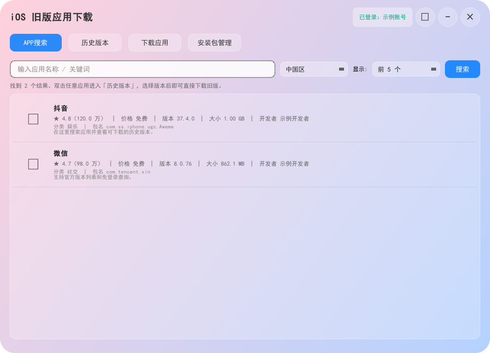
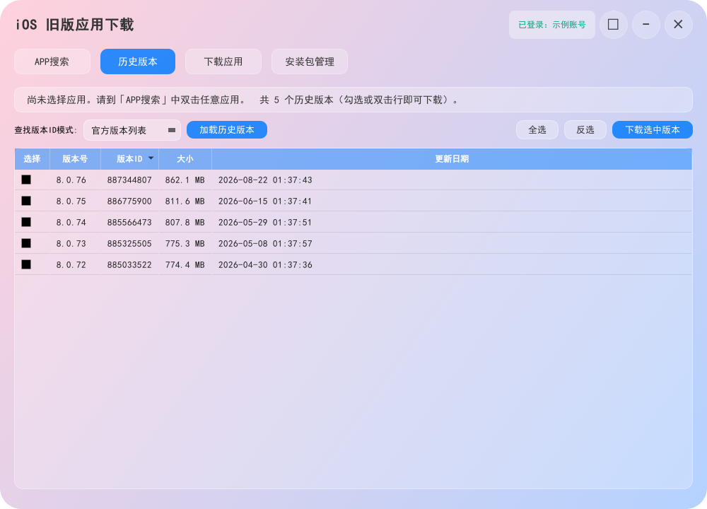
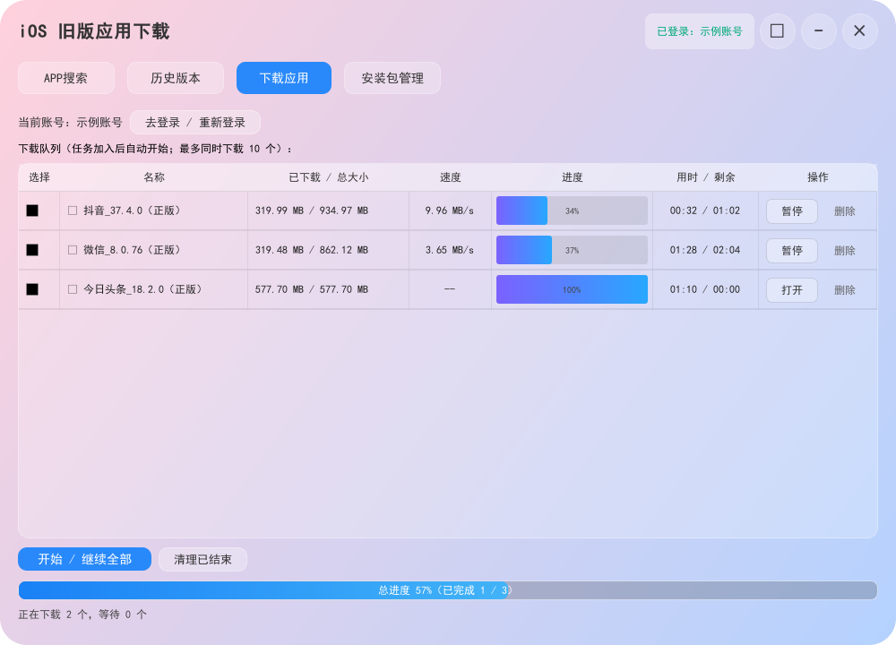
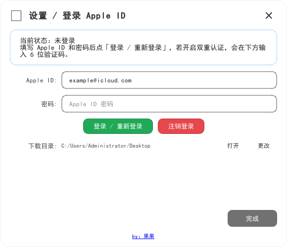

iOS App Downloader
一个简单易用的 Windows iOS 旧版应用下载工具。搜索 App Store 应用、查看历史版本，并将指定版本下载为 IPA 文件。
A simple Windows tool for searching App Store apps, viewing older versions, and downloading selected versions as IPA files.
功能
- Apple ID 登录，支持双重认证验证码
- 登录自动尝试系统代理、本机代理端口和直连，不要求手动切换节点
- 账号会话只在本次运行期间有效，注销、退出或下次启动都会清理
- 历史版本支持“官方版本列表”和“免登录查询”两种方式
- 下载队列支持最多同时下载 10 个任务
- 每个任务独立显示大小、速度、进度、用时和剩余时间
- 下载完成后可直接打开保存文件夹
- 设置中支持“跟随系统 / 简体中文 / English”
使用说明
- 双击
iOSAppDownloader.exe。 - 点击右上角设置按钮，登录 Apple ID；如果账号启用了双重认证，在验证码框输入 6 位验证码。
- 在“APP搜索”中输入应用名称并搜索，双击应用进入“历史版本”。
- 选择“官方版本列表”或“免登录查询”，勾选需要的版本后加入下载队列。
- 下载完成后，点击任务中的“打开”查看 IPA 文件。
如果登录失败，请自行开代理（VPN），本软件不提供。
选择中国区以外的区域时，软件会提示需要拥有对应区域 App Store 权限的 Apple ID。没有对应区域账号时，免登录查询仍可用于查看资料，但官方版本获取和下载可能无法完成。
软件截图
以下为软件实际界面截图。截图中的账号、下载路径均为公开示例信息，不涉及用户隐私。




发布说明
仓库同时提供 Windows 成品程序和项目源码：
iOSAppDownloader.exe：开箱即用的 Windows 成品ios_old_app_downloader.py：主程序源码ios_old_app_downloader.spec、version_info.txt、appstore.ico：打包所需文件ipatool/：运行所需的 ipatool-rs 组件
普通用户直接下载成品即可；开发者可以查看源码并按自己的环境重新打包。
接口来源
本软件的 Apple ID 登录、版本列表和 IPA 下载能力使用开源项目 ipatool 的接口能力；本成品内置的 Windows 运行组件来自 Kosthi/ipatool-rs。
Features
- Apple ID sign-in with two-factor authentication code support
- Automatically tries the system proxy, local proxy ports, and direct connection
- The account session is valid only while the app is running; sign-out and exit clear it
- Version History provides “Official version list” and “Login-free lookup” modes
- Download queue supports up to 10 simultaneous tasks
- Each task shows its size, speed, progress, elapsed time, and remaining time
- Open the download folder directly after a task completes
- Language options: Follow system, Simplified Chinese, or English
Usage
- Double-click
iOSAppDownloader.exe. - Open Settings and sign in with an Apple ID. If two-factor authentication is enabled, enter the 6-digit code.
- Search for an app in App Search and double-click it to open Version History.
- Choose “Official version list” or “Login-free lookup”, select versions, and add them to the download queue.
- When a download finishes, click Open in the task row to view the IPA file.
If sign-in fails, please configure a VPN yourself. This software does not provide one.
When a region outside Mainland China is selected, the app warns that the Apple ID must have App Store access for that region. Login-free lookup may still show information, but official version retrieval and downloads may not work without a matching regional account.
Screenshots
These screenshots show the actual software interface. The account and path shown are public examples and do not contain user privacy.
Release
This repository includes the Windows release and the project source:
iOSAppDownloader.exe: ready-to-use Windows buildios_old_app_downloader.py: main source fileios_old_app_downloader.spec,version_info.txt, andappstore.ico: packaging filesipatool/: required ipatool-rs runtime components
Download the release for normal use, or inspect the source and rebuild it in your own environment.
API Source
The Apple ID sign-in, version listing, and IPA download capabilities use the open-source ipatool API. The bundled Windows runtime component is provided by Kosthi/ipatool-rs.